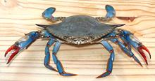
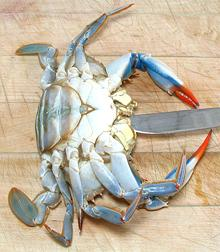
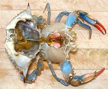
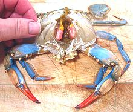
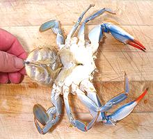
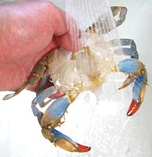
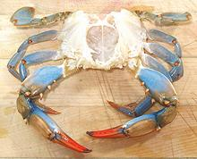
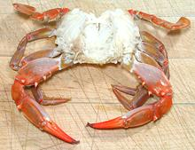

Blue Crabs are found from Nova Scotia to northern Argentina but are most abundant from Massachusetts on down and around the coast to Texas. They are particularly important to the economy in the Chesapeake Bay area of Maryland and Virginia. They can grow to about 9.1 inches across the points of the shell, but the photo example was 7 inches and weighed 8-3/4 ounces.
This is a highly mobile "swimming crab" which will travel a couple hundred miles seasonally. It is very active and feisty and you don't want to get pinched because the claws are very strong. Populations in the Chesapeake Bay have been declining and major experimental hatcheries have been established to try to reverse the decline. The demand is so great crabs are now being imported from as far away as Texas.
More on Crabs.
Blue Crab flesh is very tender and succulent, but it's a crab you eat for the adventure not to fill you up. Eating them is quite a project and yield is extremely low, 8% for smaller females to 14% for larger males. A 4-1/4 inch 3.8 ounce female crab, carefully picked, yielded 0.3 ounces of edible crab (8%). Figure 6 or 7 crabs per person and have plenty of other stuff to eat.
Females have red claw tips and males blue claw tips. On the underside immature females have a triangular "apron", mature females have a wide rounded apron and males have a narrow pointy apron. Males are called "Jimmies", immature females "Sally" or "She Crabs" and mature females are called "Sook".
Blue crabs are sold by two grading methods, a number system on the docks and a size system in commerce (with typically exaggerated size designations).
| Size | Width | Crabs / bushel |
|---|---|---|
| Jumbo | 6 - 6-1/2 inch | 60 - 72 crabs |
| Large | 5-1/2 - 6 inch | 72 - 84 crabs |
| Medium | 5 - 5-1/2 inch | 84 - 96 crabs |
Most of the male crabs go to the East Coast or are sold to fancy restaurants elsewhere. #3s (all female) are sent to Southern California where they are sold in Philippine fish markets, often for less than $1.00/pound.
There are two generally accepted ways to eat these crabs:
| 1 |  | Sedate your crabs - they are not going to be one bit cooperative otherwise. The one in the photo wanted a piece of me really, really bad and those claws are very strong. Sedate them by giving them a good long soak in a tub of ice water (with plenty of ice). They'll still be moving but very sluggish and won't be able to pinch. Being sedated also makes the following steps easier on the crab. |
| 2 |  | Holding the outer shell down to the cutting board, get a butter knife in through the mouth parts. Once it's in two or three inches, pry sharply upward to eject the chassis from the shell, still holding the outer shell firmly. |
| 3 |  | Bend the shell back off the chassis exposing the gills. Instructions on other sites tell you the above procedure kills the crab instantly but that depends on your definition of "kills". The crab was sedated to start with, is now blind and probably has lost all consciousness, but the body still responds to stimulus for about a minute, so expect some waving of the legs when you move it. |
| 4 |  |

Pull off the gills, commonly known as "dead man's
fingers".
Pull back the "apron" on the bottom and break it off. Females have a wide rounded apron as shown in the photo while males have a very narrow pointy apron. |
| 5 |  | Wash under running water - anything with any color needs to be removed from the inside. A thin chopstick can help you get stuff out of the cavities leaving only translucent white flesh. Use kitchen shears to cut away any extraneous pieces of shell. |
| 6 |  | You should now have a completely cleaned crab chassis with legs and claws attached, all ready to cook by whatever means you please. |
| 7 |  | And here we have the finished product, a steamed blue crab ready to eat. For clarity no seasoning or sauces have been applied. Consider a light sprinkle of Old Bay Seasoning and salt (half and half) on your plate to touch pieces of crab to as you disassemble it, or my favorite CG Crab Dip. |